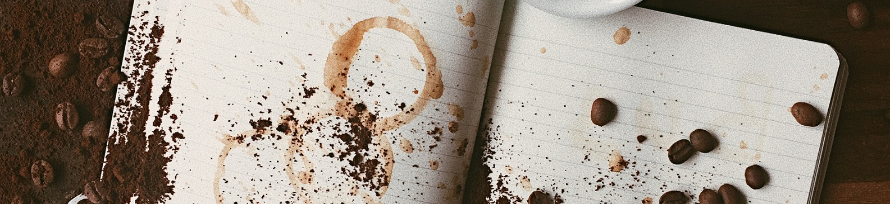

Nuestra Historia
Obsesionados por lograr un café perfecto, nos sumergimos en este fantástico y apasionante mundo, aprendimos de tostación, de cata y de cómo servirlo... Así descubrimos una nueva pasión y la satisfacción de conseguir una perfecta taza de café cada mañana. Y como nos gusta compartir empezamos a tostar para amigos, nos motivaron a seguir entonces abrimos nuestro primer local y crecimos gracias al boca a boca y entonces abrimos un segundo local y aquí estamos avanzando... Manteniendo nuestro stándard de calidad y servicio, porque uno no puede cambiar de pasión